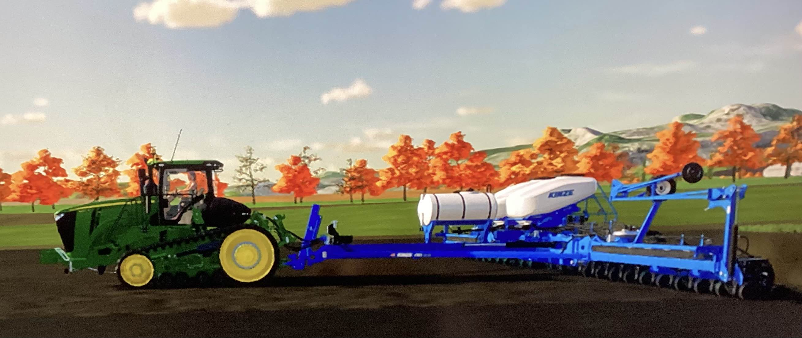
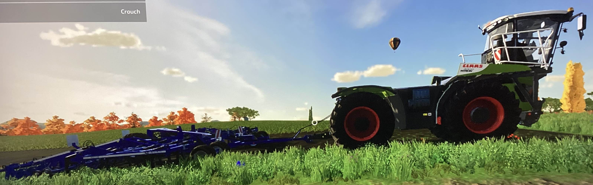
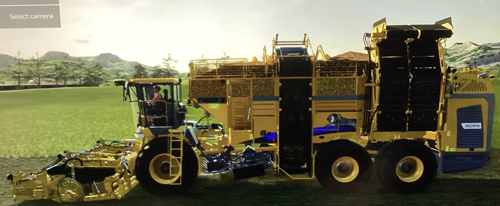
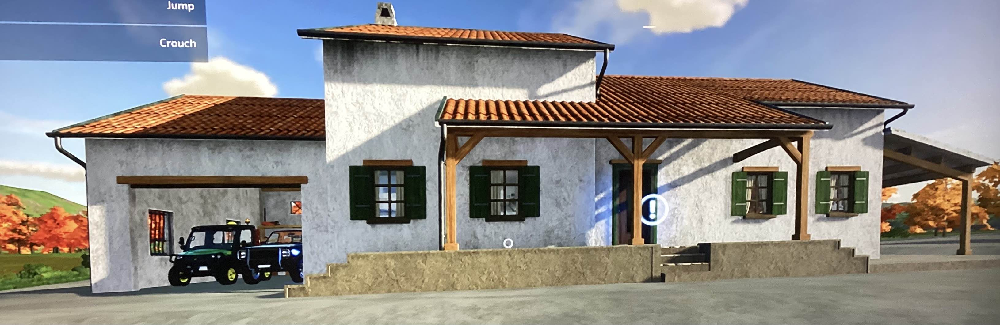
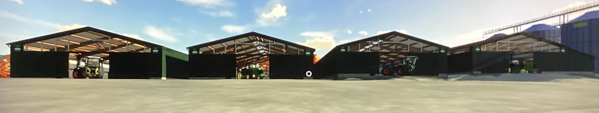
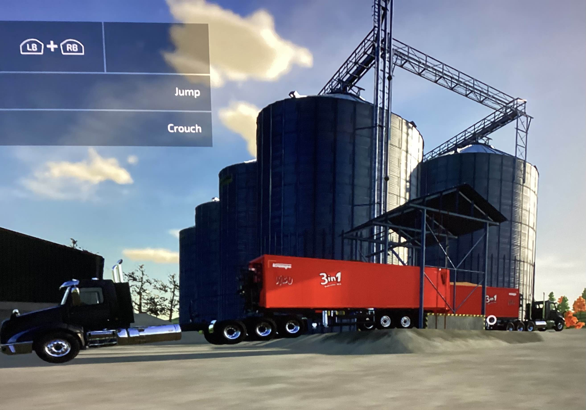

Here is where my first farm is and also my third ever farm is.
In this farm it is a very large sugar beet farm.
First off, when you make a sugar beet farm you have to have and planter or seeder
Then you need a cultivater or plow
When your done with that then you harvest the sugar beet with your sugar beet combine. There are two of the sugar beet combines sometimes you can put one on the back of your trailer or just do the one that I have below (not the one that connects to your own tractor)
If you realy want to be realistic or roleplay with friends or just your self, here are my houses and sheds.
  